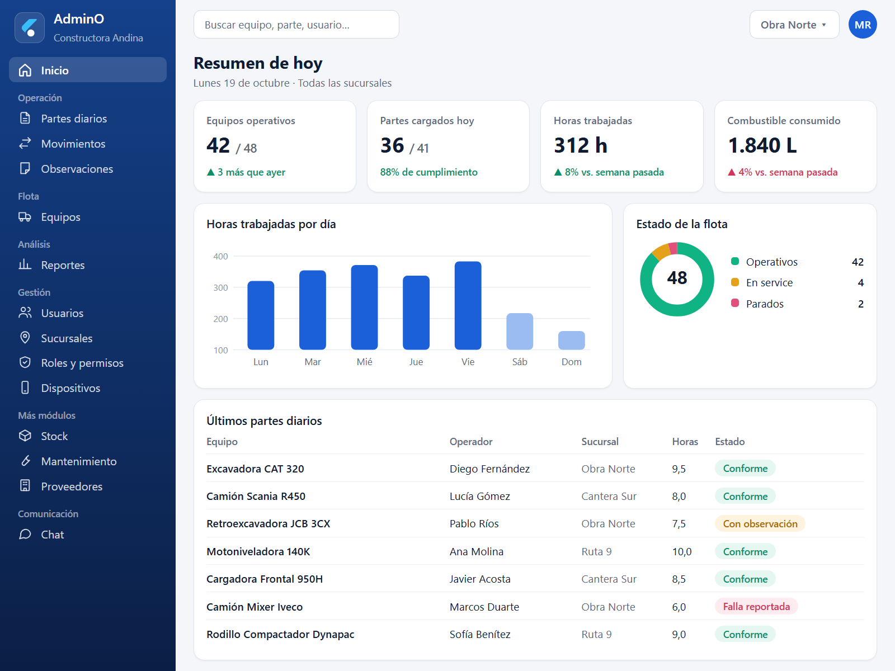

La obra, los equipos y los partes, en un solo lugar
AdminO es una plataforma para empresas de construccion e infraestructura, registra el trabajo diario de cada equipo, sus traslados entre sucursales y las observaciones de campo, y lo convierte en información para decidir.
Conocer los modulos Pedir una demo
Qué resuelve AdminO
Pensado para quien gestiona flota y obra todos los dias, en la oficina y en el campo.
Partes diarios
Cada equipo registra lectura, horas, kilometros, combustible y paros desde el celular, aunque este en obra.
Flota bajo control
Sabé donde esta cada equipo, quien lo opera, cuando cargó su último parte y cuanto consume.
Avisos y reportes
El panel señala lo que hay que revisar: equipos sin parte, consumos fuera de lo normal, paros.
Lo que dicen quienes la usan
En la oficina y en el campo, desde la web o la aplicación móvil.
"Antes los partes llegaban con retraso. Ahora los veo el mismo día y se que equipo está parado".
"Cargo el parte desde el celular, al terminar la jornada, en un minuto, aunque no haya señal en la obra".
"Los traslados entre obras, quedan registrados: sé que salió, qué está en transito y que se recibió".